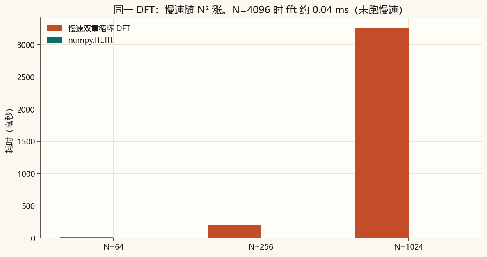
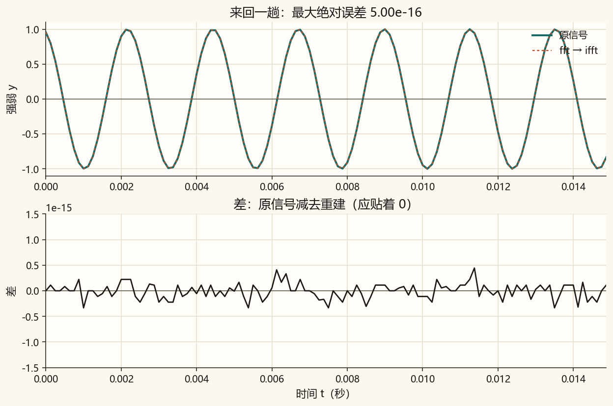
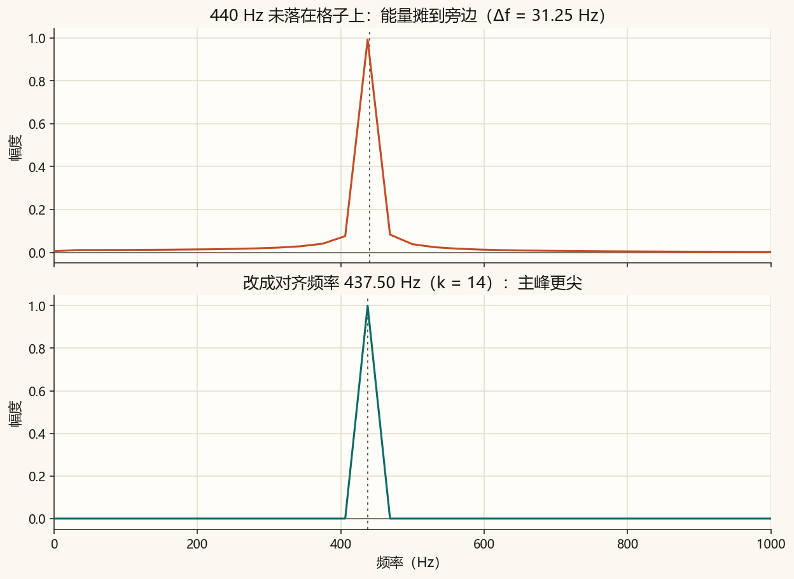
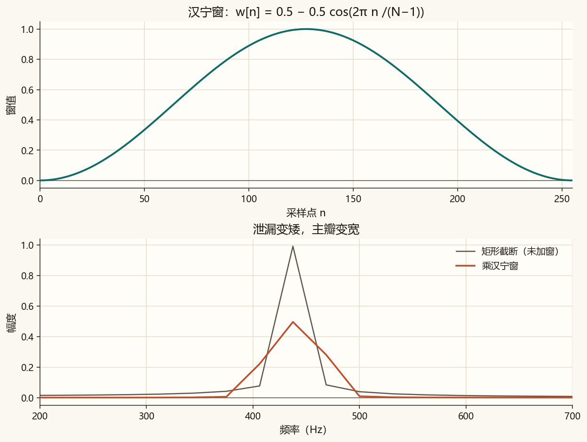
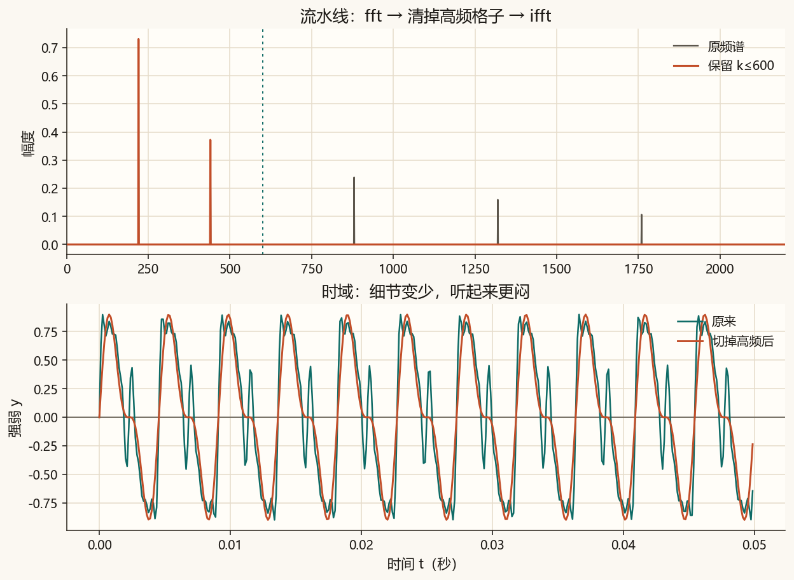
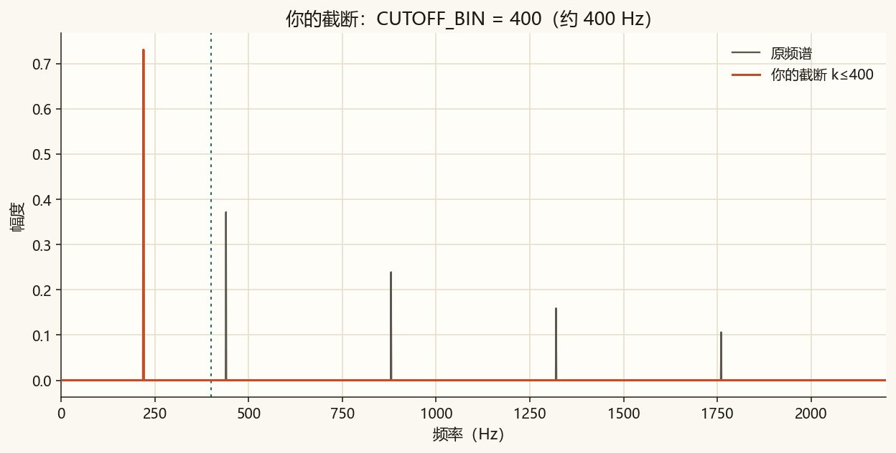
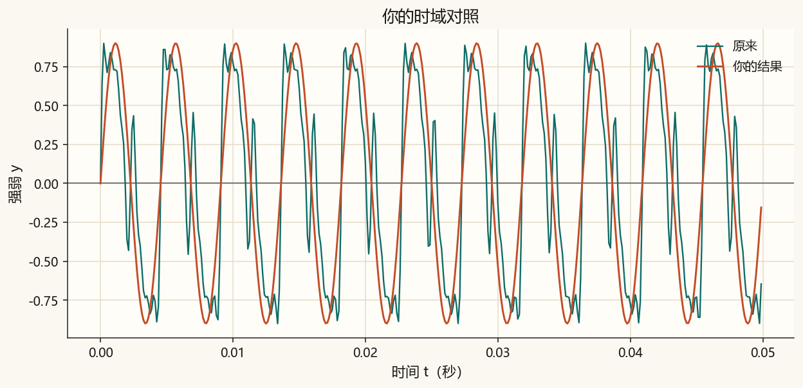

第 6 篇 · 算得快 · 约 55 分钟
第 5 篇的双重循环算出的就是 DFT。点数一大，循环会慢得明显。FFT 是同一答案的快速算法。这一篇先比速度，再走一遍 fft→ifft，然后看频谱为什么会「漏」到旁边格子，最后用窗和一次低通流水线听出差别。
快速傅里叶变换（FFT）不算另一种变换。它给出的 X[k] 与第 5 篇慢速双重循环相同，只是步数少得多。慢速大约按 N² 涨；常用 FFT 大约按 N log N 涨。
脚本里慢速 DFT 只比到 N = 1024。N = 4096 的双重循环会明显拖时间，所以那一档只测 numpy.fft.fft，并在图题里写明。

DFT 把时域变成频谱；逆变换（IDFT / ifft）把频谱变回时域。理想情况下：
ifft(fft(x)) ≈ x
差值来自浮点四舍五入，应接近 0，而不是「差不多像」。

取 fs = 8000 Hz，N = 256，则 Δf = fs/N = 31.25 Hz。440 Hz 除以 31.25 得 14.08，落在两个格子之间。窗口外被硬切成 0，等于乘了一个矩形，频谱会摊到旁边——叫频谱泄漏。
若把频率改成正好 k × Δf（脚本里约 437.5 Hz），主峰更尖，旁瓣更矮。

加窗是在 FFT 之前先乘一段中间高、两端低的权重，减轻「硬切开」的锐沿。汉宁窗一行就能写完：
w[n] = 0.5 - 0.5 * cos(2π n / (N - 1))泄漏的旁瓣会变矮，主瓣会变宽：频率定位稍糊一点，换来旁边更干净。

频谱不仅可以看，还可以改。课文示范：
fft 得到频谱；ifft 回到时域，得到更闷的声音。
原来的亮音。
切掉高频之后。
下面用 N = 64、fs = 64，于是 Δf = 1 Hz。拖动频率：整数 Hz 时柱子更集中；稍微偏一点，能量会爬到邻居格子上。
完整脚本在 code/ch06_fft.py。低通的核心是：
X = np.fft.fft(x)
X[cutoff + 1 : N - cutoff] = 0 # 正频率高端 + 负频率镜像一起清掉
y = np.fft.ifft(X).realpython code/ch06_fft.py终端里应出现「自检通过」，以及往返误差、若干档计时。课文图是 ch06_timing.png、ch06_roundtrip.png、ch06_leakage.png、ch06_window.png、ch06_filter.png。声音是 ch06_bright.wav、ch06_dull.wav。你的结果只跟随 CUTOFF_BIN。
若终端中文是乱码，先执行 chcp 65001。图和 wav 照样会保存。计时数字每台机器不同。
code/ch06_fft.py。默认 CUTOFF_BIN = 400。课文示范的截断不读这个数。200，运行。听 ch06_filtered_mine.wav，对照 ch06_mine_spectrum.png：保留的高频更少，更闷。1000，再运行：更亮，更接近原声。400。

你的声音：
是同一种变换。差别是算法快慢：FFT 用更少的乘法加法得到同一组 X[k]。
Δf = 8000/256 = 31.25 Hz。440 ÷ 31.25 = 14.08，不在整数格子上，再加上矩形截断，能量会摊到旁边。
汉宁窗减轻截断造成的泄漏（旁瓣），主瓣会变宽。切掉高频是主动改频谱，再 ifft，用来得到更闷的音色。
下一篇用合成的「真实一点」的声音看频谱：纯音、和弦、不同泛音比例的音色，并说明整段录音一次性 FFT 看不出音符的先后。